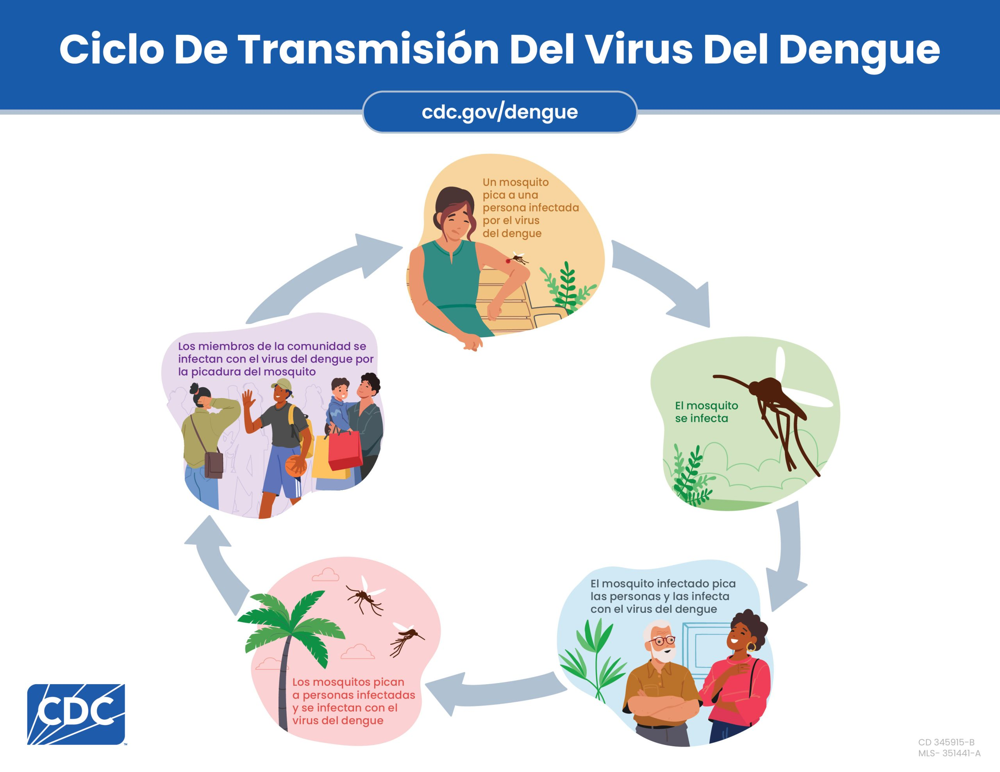
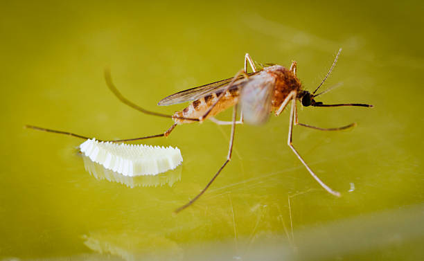
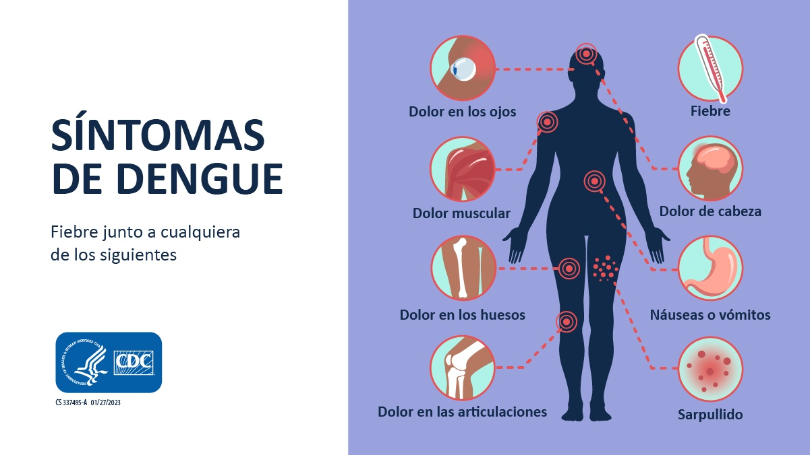
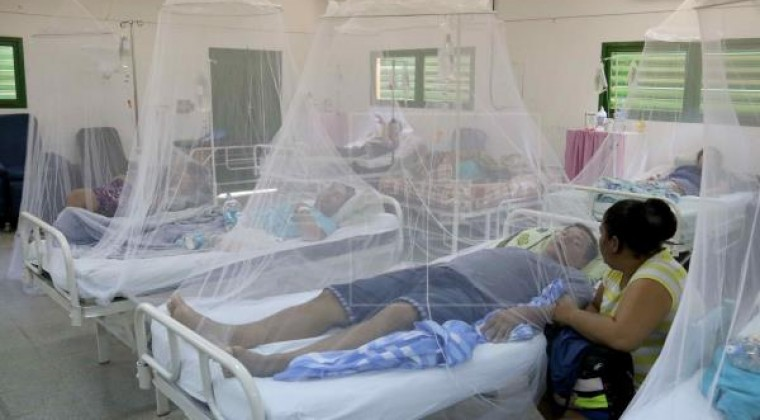
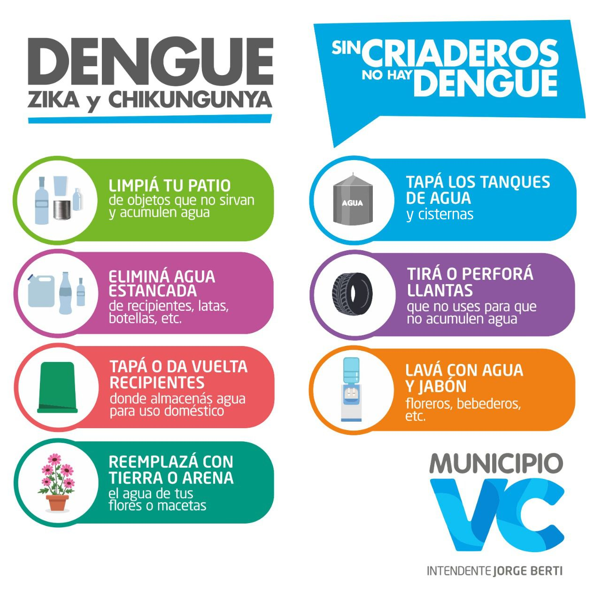
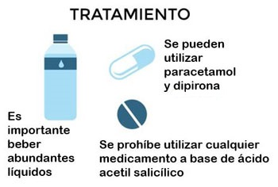

Inicio

El dengue es una enfermedad viral transmitida por la picadura del mosquito Aedes aegypti. Es una de las enfermedades más extendidas en regiones tropicales y subtropicales, afectando a millones de personas cada año.
La prevención del dengue no depende solo del gobierno o las autoridades sanitarias, sino de todos los ciudadanos. Eliminando los criaderos de mosquitos en el hogar y promoviendo la limpieza en la comunidad, podemos detener su propagación.
Causas
El dengue es causado por el virus del dengue, que se transmite principalmente a través del mosquito Aedes aegypti. Este mosquito se reproduce en aguas estancadas, especialmente en recipientes domésticos como floreros, baldes, neumáticos viejos y botellas.
El mosquito pica a una persona infectada y luego transmite el virus al picar a otra. Existen cuatro tipos del virus (DEN-1, DEN-2, DEN-3 y DEN-4), y una persona puede infectarse más de una vez.
Síntomas
Los síntomas del dengue pueden variar desde leves hasta graves. Aparecen entre 4 y 10 días después de la picadura del mosquito infectado. Los casos graves deben ser atendidos inmediatamente por personal médico.
- Fiebre alta repentina (hasta 40°C)
- Dolor de cabeza intenso y detrás de los ojos
- Dolores musculares y articulares
- Náuseas, vómitos y cansancio extremo
- Erupciones en la piel o sarpullido
En casos severos puede presentarse el dengue hemorrágico, que incluye sangrados y dificultad para respirar.
Prevención
La prevención del dengue se basa principalmente en eliminar los criaderos de mosquitos y protegerse de las picaduras. Las siguientes acciones son esenciales para mantener el hogar y la comunidad libres de mosquitos.
- Elimina el agua acumulada en recipientes, floreros, cubetas y botellas.
- Tapar los tanques de agua y limpiar los bebederos de animales.
- Desechar neumáticos viejos y objetos que puedan acumular agua.
- Usar repelentes y ropa que cubra brazos y piernas.
- Colocar mosquiteros en puertas y ventanas.
Tratamiento
No existe un tratamiento específico para el dengue, pero con atención médica y cuidados adecuados, la mayoría de las personas se recupera sin complicaciones.
El tratamiento se centra en aliviar los síntomas y prevenir complicaciones graves.
- Descansar y mantenerse bien hidratado.
- No tomar aspirina ni ibuprofeno, ya que pueden causar hemorragias.
- Usar paracetamol para aliviar la fiebre y el dolor.
- Consultar al médico ante signos de alarma: sangrados, dolor abdominal o vómitos persistentes.